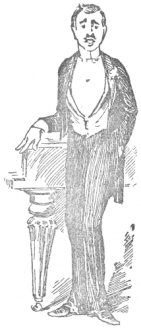

CHAPTER VIII.
Blackmailing.—The proper course to pursue.—Selfish boorishness of river-side landowner.—“Notice” boards.—Unchristianlike feelings of Harris.—How Harris sings a comic song.—A high-class party.—Shameful conduct of two abandoned young men.—Some useless information.—George buys a banjo.
We stopped under the willows by Kempton Park, and lunched. It is a pretty little spot there: a pleasant grass plateau, running along by the water’s edge, and overhung by willows. We had just commenced the third course—the bread and jam—when a gentleman in shirt-sleeves and a short pipe came along, and wanted to know if we knew that we were trespassing. We said we hadn’t given the matter sufficient consideration as yet to enable us to arrive at a definite conclusion on that point, but that, if he assured us on his word as a gentleman that we were trespassing, we would, without further hesitation, believe it.
He gave us the required assurance, and we thanked him, but he still hung about, and seemed to be dissatisfied, so we asked him if there was anything further that we could do for him; and Harris, who is of a chummy disposition, offered him a bit of bread and jam.
I fancy he must have belonged to some society sworn to abstain from bread and jam; for he declined it quite gruffly, as if he were vexed at being tempted with it, and he added that it was his duty to turn us off.
Harris said that if it was a duty it ought to be done, and asked the man what was his idea with regard to the best means for accomplishing it. Harris is what you would call a well-made man of about number one size, and looks hard and bony, and the man measured him up and down, and said he would go and consult his master, and then come back and chuck us both into the river.
Of course, we never saw him any more, and, of course, all he really wanted was a shilling. There are a certain number of riverside roughs who make quite an income, during the summer, by slouching about the banks and blackmailing weak-minded noodles in this way. They represent themselves as sent by the proprietor. The proper course to pursue is to offer your name and address, and leave the owner, if he really has anything to do with the matter, to summon you, and prove what damage you have done to his land by sitting down on a bit of it. But the majority of people are so intensely lazy and timid, that they prefer to encourage the imposition by giving in to it rather than put an end to it by the exertion of a little firmness.
Where it is really the owners that are to blame, they ought to be shown up. The selfishness of the riparian proprietor grows with every year. If these men had their way they would close the river Thames altogether. They actually do this along the minor tributary streams and in the backwaters. They drive posts into the bed of the stream, and draw chains across from bank to bank, and nail huge notice-boards on every tree. The sight of those notice-boards rouses every evil instinct in my nature. I feel I want to tear each one down, and hammer it over the head of the man who put it up, until I have killed him, and then I would bury him, and put the board up over the grave as a tombstone.
I mentioned these feelings of mine to Harris, and he said he had them worse than that. He said he not only felt he wanted to kill the man who caused the board to be put up, but that he should like to slaughter the whole of his family and all his friends and relations, and then burn down his house. This seemed to me to be going too far, and I said so to Harris; but he answered:
“Not a bit of it. Serve ’em all jolly well right, and I’d go and sing comic songs on the ruins.”
I was vexed to hear Harris go on in this blood-thirsty strain. We never ought to allow our instincts of justice to degenerate into mere vindictiveness. It was a long while before I could get Harris to take a more Christian view of the subject, but I succeeded at last, and he promised me that he would spare the friends and relations at all events, and would not sing comic songs on the ruins.
You have never heard Harris sing a comic song, or you would understand the service I had rendered to mankind. It is one of Harris’s fixed ideas that he can sing a comic song; the fixed idea, on the contrary, among those of Harris’s friends who have heard him try, is that he can’t and never will be able to, and that he ought not to be allowed to try.
When Harris is at a party, and is asked to sing, he replies: “Well, I can only sing a comic song, you know;” and he says it in a tone that implies that his singing of that, however, is a thing that you ought to hear once, and then die.
“Oh, that is nice,” says the hostess. “Do sing one, Mr. Harris;” and Harris gets up, and makes for the piano, with the beaming cheeriness of a generous-minded man who is just about to give somebody something.
“Now, silence, please, everybody” says the hostess, turning round; “Mr. Harris is going to sing a comic song!”
“Oh, how jolly!” they murmur; and they hurry in from the conservatory, and come up from the stairs, and go and fetch each other from all over the house, and crowd into the drawing-room, and sit round, all smirking in anticipation.
Then Harris begins.
Well, you don’t look for much of a voice in a comic song. You don’t expect correct phrasing or vocalization. You don’t mind if a man does find out, when in the middle of a note, that he is too high, and comes down with a jerk. You don’t bother about time. You don’t mind a man being two bars in front of the accompaniment, and easing up in the middle of a line to argue it out with the pianist, and then starting the verse afresh. But you do expect the words.
You don’t expect a man to never remember more than the first three lines of the first verse, and to keep on repeating these until it is time to begin the chorus. You don’t expect a man to break off in the middle of a line, and snigger, and say, it’s very funny, but he’s blest if he can think of the rest of it, and then try and make it up for himself, and, afterwards, suddenly recollect it, when he has got to an entirely different part of the song, and break off, without a word of warning, to go back and let you have it then and there. You don’t—well, I will just give you an idea of Harris’s comic singing, and then you can judge of it for yourself.

HARRIS (standing up in front of piano and addressing the expectant mob): “I’m afraid it’s a very old thing, you know. I expect you all know it, you know. But it’s the only thing I know. It’s the Judge’s song out of Pinafore_—no, I don’t mean _Pinafore_—I mean—you know what I mean—the other thing, you know. You must all join in the chorus, you know.”
[_Murmurs of delight and anxiety to join in the chorus. Brilliant performance of prelude to the Judge’s song in “Trial by Jury_” _by nervous Pianist. Moment arrives for Harris to join in. Harris takes no notice of it. Nervous pianist commences prelude over again, and Harris, commencing singing at the same time, dashes off the first two lines of the First Lord’s song out of “Pinafore.” Nervous pianist tries to push on with prelude, gives it up, and tries to follow Harris with accompaniment to Judge’s song out of “Trial by Jury,” finds that doesn’t answer, and tries to recollect what he is doing, and where he is, feels his mind giving way, and stops short.]
HARRIS (with kindly encouragement): “It’s all right. You’re doing it very well, indeed—go on.”
NERVOUS PIANIST: “I’m afraid there’s a mistake somewhere. What are you singing?”
HARRIS (promptly): “Why the Judge’s song out of Trial by Jury. Don’t you know it?”
SOME FRIEND OF HARRIS’S (from the back of the room): “No, you’re not, you chuckle-head, you’re singing the Admiral’s song from Pinafore.”
[Long argument between Harris and Harris’s friend as to what Harris is really singing. Friend finally suggests that it doesn’t matter what Harris is singing so long as Harris gets on and sings it, and Harris, with an evident sense of injustice rankling inside him, requests pianist to begin again. Pianist, thereupon, starts prelude to the Admiral’s song, and Harris, seizing what he considers to be a favourable opening in the music, begins.]
HARRIS:
“‘When I was young and called to the Bar.’”
[General roar of laughter, taken by Harris as a compliment. Pianist, thinking of his wife and family, gives up the unequal contest and retires; his place being taken by a stronger-nerved man.
THE NEW PIANIST (cheerily): “Now then, old man, you start off, and I’ll follow. We won’t bother about any prelude.”
HARRIS (upon whom the explanation of matters has slowly dawned—laughing): “By Jove! I beg your pardon. Of course—I’ve been mixing up the two songs. It was Jenkins confused me, you know. Now then.
[Singing; his voice appearing to come from the cellar, and suggesting the first low warnings of an approaching earthquake.
“‘When I was young I served a term, As office-boy to an attorney’s firm.’
(Aside to pianist): “It is too low, old man; we’ll have that over again, if you don’t mind.”
[Sings first two lines over again, in a high falsetto this time. Great surprise on the part of the audience. Nervous old lady near the fire begins to cry, and has to be led out.]
HARRIS (continuing):
“‘I swept the windows and I swept the door, And I—’
No—no, I cleaned the windows of the big front door. And I polished up the floor—no, dash it—I beg your pardon—funny thing, I can’t think of that line. And I—and I—Oh, well, we’ll get on to the chorus, and chance it (sings):
“‘And I diddle-diddle-diddle-diddle-diddle-diddle-de, Till now I am the ruler of the Queen’s navee.’
Now then, chorus—it is the last two lines repeated, you know.
GENERAL CHORUS:
“And he diddle-diddle-diddle-diddle-diddle-diddle-dee’d, Till now he is the ruler of the Queen’s navee.”
And Harris never sees what an ass he is making of himself, and how he is annoying a lot of people who never did him any harm. He honestly imagines that he has given them a treat, and says he will sing another comic song after supper.
Speaking of comic songs and parties, reminds me of a rather curious incident at which I once assisted; which, as it throws much light upon the inner mental working of human nature in general, ought, I think, to be recorded in these pages.
We were a fashionable and highly cultured party. We had on our best clothes, and we talked pretty, and were very happy—all except two young fellows, students, just returned from Germany, commonplace young men, who seemed restless and uncomfortable, as if they found the proceedings slow. The truth was, we were too clever for them. Our brilliant but polished conversation, and our high-class tastes, were beyond them. They were out of place, among us. They never ought to have been there at all. Everybody agreed upon that, later on.
We played morceaux from the old German masters. We discussed philosophy and ethics. We flirted with graceful dignity. We were even humorous—in a high-class way.
Somebody recited a French poem after supper, and we said it was beautiful; and then a lady sang a sentimental ballad in Spanish, and it made one or two of us weep—it was so pathetic.
And then those two young men got up, and asked us if we had ever heard Herr Slossenn Boschen (who had just arrived, and was then down in the supper-room) sing his great German comic song.
None of us had heard it, that we could remember.
The young men said it was the funniest song that had ever been written, and that, if we liked, they would get Herr Slossenn Boschen, whom they knew very well, to sing it. They said it was so funny that, when Herr Slossenn Boschen had sung it once before the German Emperor, he (the German Emperor) had had to be carried off to bed.
They said nobody could sing it like Herr Slossenn Boschen; he was so intensely serious all through it that you might fancy he was reciting a tragedy, and that, of course, made it all the funnier. They said he never once suggested by his tone or manner that he was singing anything funny—that would spoil it. It was his air of seriousness, almost of pathos, that made it so irresistibly amusing.
We said we yearned to hear it, that we wanted a good laugh; and they went downstairs, and fetched Herr Slossenn Boschen.
He appeared to be quite pleased to sing it, for he came up at once, and sat down to the piano without another word.
“Oh, it will amuse you. You will laugh,” whispered the two young men, as they passed through the room, and took up an unobtrusive position behind the Professor’s back.
Herr Slossenn Boschen accompanied himself. The prelude did not suggest a comic song exactly. It was a weird, soulful air. It quite made one’s flesh creep; but we murmured to one another that it was the German method, and prepared to enjoy it.
I don’t understand German myself. I learned it at school, but forgot every word of it two years after I had left, and have felt much better ever since. Still, I did not want the people there to guess my ignorance; so I hit upon what I thought to be rather a good idea. I kept my eye on the two young students, and followed them. When they tittered, I tittered; when they roared, I roared; and I also threw in a little snigger all by myself now and then, as if I had seen a bit of humour that had escaped the others. I considered this particularly artful on my part.
I noticed, as the song progressed, that a good many other people seemed to have their eye fixed on the two young men, as well as myself. These other people also tittered when the young men tittered, and roared when the young men roared; and, as the two young men tittered and roared and exploded with laughter pretty continuously all through the song, it went exceedingly well.
And yet that German Professor did not seem happy. At first, when we began to laugh, the expression of his face was one of intense surprise, as if laughter were the very last thing he had expected to be greeted with. We thought this very funny: we said his earnest manner was half the humour. The slightest hint on his part that he knew how funny he was would have completely ruined it all. As we continued to laugh, his surprise gave way to an air of annoyance and indignation, and he scowled fiercely round upon us all (except upon the two young men who, being behind him, he could not see). That sent us into convulsions. We told each other that it would be the death of us, this thing. The words alone, we said, were enough to send us into fits, but added to his mock seriousness—oh, it was too much!
In the last verse, he surpassed himself. He glowered round upon us with a look of such concentrated ferocity that, but for our being forewarned as to the German method of comic singing, we should have been nervous; and he threw such a wailing note of agony into the weird music that, if we had not known it was a funny song, we might have wept.
He finished amid a perfect shriek of laughter. We said it was the funniest thing we had ever heard in all our lives. We said how strange it was that, in the face of things like these, there should be a popular notion that the Germans hadn’t any sense of humour. And we asked the Professor why he didn’t translate the song into English, so that the common people could understand it, and hear what a real comic song was like.
Then Herr Slossenn Boschen got up, and went on awful. He swore at us in German (which I should judge to be a singularly effective language for that purpose), and he danced, and shook his fists, and called us all the English he knew. He said he had never been so insulted in all his life.
It appeared that the song was not a comic song at all. It was about a young girl who lived in the Hartz Mountains, and who had given up her life to save her lover’s soul; and he died, and met her spirit in the air; and then, in the last verse, he jilted her spirit, and went on with another spirit—I’m not quite sure of the details, but it was something very sad, I know. Herr Boschen said he had sung it once before the German Emperor, and he (the German Emperor) had sobbed like a little child. He (Herr Boschen) said it was generally acknowledged to be one of the most tragic and pathetic songs in the German language.
It was a trying situation for us—very trying. There seemed to be no answer. We looked around for the two young men who had done this thing, but they had left the house in an unostentatious manner immediately after the end of the song.
That was the end of that party. I never saw a party break up so quietly, and with so little fuss. We never said good-night even to one another. We came downstairs one at a time, walking softly, and keeping the shady side. We asked the servant for our hats and coats in whispers, and opened the door for ourselves, and slipped out, and got round the corner quickly, avoiding each other as much as possible.
I have never taken much interest in German songs since then.
We reached Sunbury Lock at half-past three. The river is sweetly pretty just there before you come to the gates, and the backwater is charming; but don’t attempt to row up it.
I tried to do so once. I was sculling, and asked the fellows who were steering if they thought it could be done, and they said, oh, yes, they thought so, if I pulled hard. We were just under the little foot-bridge that crosses it between the two weirs, when they said this, and I bent down over the sculls, and set myself up, and pulled.
I pulled splendidly. I got well into a steady rhythmical swing. I put my arms, and my legs, and my back into it. I set myself a good, quick, dashing stroke, and worked in really grand style. My two friends said it was a pleasure to watch me. At the end of five minutes, I thought we ought to be pretty near the weir, and I looked up. We were under the bridge, in exactly the same spot that we were when I began, and there were those two idiots, injuring themselves by violent laughing. I had been grinding away like mad to keep that boat stuck still under that bridge. I let other people pull up backwaters against strong streams now.
We sculled up to Walton, a rather large place for a riverside town. As with all riverside places, only the tiniest corner of it comes down to the water, so that from the boat you might fancy it was a village of some half-dozen houses, all told. Windsor and Abingdon are the only towns between London and Oxford that you can really see anything of from the stream. All the others hide round corners, and merely peep at the river down one street: my thanks to them for being so considerate, and leaving the river-banks to woods and fields and water-works.
Even Reading, though it does its best to spoil and sully and make hideous as much of the river as it can reach, is good-natured enough to keep its ugly face a good deal out of sight.
Cæsar, of course, had a little place at Walton—a camp, or an entrenchment, or something of that sort. Cæsar was a regular up-river man. Also Queen Elizabeth, she was there, too. You can never get away from that woman, go where you will. Cromwell and Bradshaw (not the guide man, but the King Charles’s head man) likewise sojourned here. They must have been quite a pleasant little party, altogether.
There is an iron “scold’s bridle” in Walton Church. They used these things in ancient days for curbing women’s tongues. They have given up the attempt now. I suppose iron was getting scarce, and nothing else would be strong enough.
There are also tombs of note in the church, and I was afraid I should never get Harris past them; but he didn’t seem to think of them, and we went on. Above the bridge the river winds tremendously. This makes it look picturesque; but it irritates you from a towing or sculling point of view, and causes argument between the man who is pulling and the man who is steering.
You pass Oatlands Park on the right bank here. It is a famous old place. Henry VIII. stole it from some one or the other, I forget whom now, and lived in it. There is a grotto in the park which you can see for a fee, and which is supposed to be very wonderful; but I cannot see much in it myself. The late Duchess of York, who lived at Oatlands, was very fond of dogs, and kept an immense number. She had a special graveyard made, in which to bury them when they died, and there they lie, about fifty of them, with a tombstone over each, and an epitaph inscribed thereon.
Well, I dare say they deserve it quite as much as the average Christian does.
At “Corway Stakes”—the first bend above Walton Bridge—was fought a battle between Cæsar and Cassivelaunus. Cassivelaunus had prepared the river for Cæsar, by planting it full of stakes (and had, no doubt, put up a notice-board). But Cæsar crossed in spite of this. You couldn’t choke Cæsar off that river. He is the sort of man we want round the backwaters now.
Halliford and Shepperton are both pretty little spots where they touch the river; but there is nothing remarkable about either of them. There is a tomb in Shepperton churchyard, however, with a poem on it, and I was nervous lest Harris should want to get out and fool round it. I saw him fix a longing eye on the landing-stage as we drew near it, so I managed, by an adroit movement, to jerk his cap into the water, and in the excitement of recovering that, and his indignation at my clumsiness, he forgot all about his beloved graves.
At Weybridge, the Wey (a pretty little stream, navigable for small boats up to Guildford, and one which I have always been making up my mind to explore, and never have), the Bourne, and the Basingstoke Canal all enter the Thames together. The lock is just opposite the town, and the first thing that we saw, when we came in view of it, was George’s blazer on one of the lock gates, closer inspection showing that George was inside it.
Montmorency set up a furious barking, I shrieked, Harris roared; George waved his hat, and yelled back. The lock-keeper rushed out with a drag, under the impression that somebody had fallen into the lock, and appeared annoyed at finding that no one had.
George had rather a curious oilskin-covered parcel in his hand. It was round and flat at one end, with a long straight handle sticking out of it.
“What’s that?” said Harris—“a frying-pan?”
“No,” said George, with a strange, wild look glittering in his eyes; “they are all the rage this season; everybody has got them up the river. It’s a banjo.”
“I never knew you played the banjo!” cried Harris and I, in one breath.
“Not exactly,” replied George: “but it’s very easy, they tell me; and I’ve got the instruction book!”